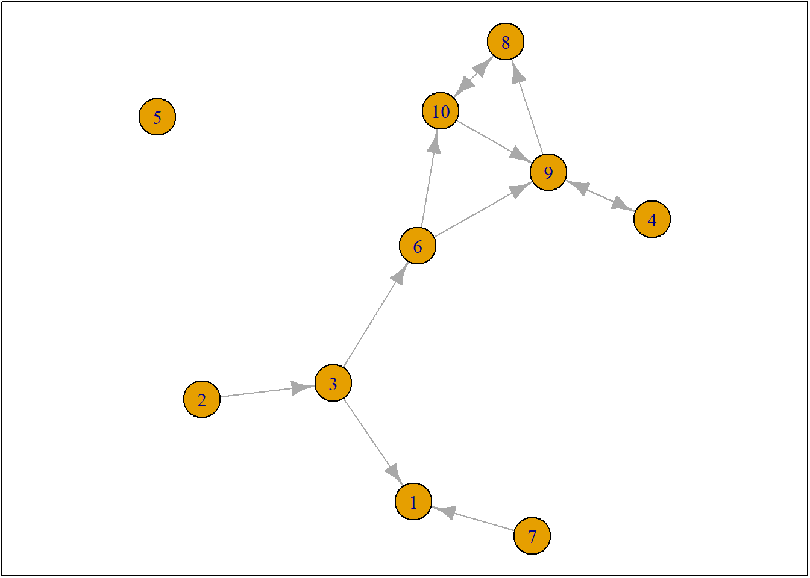
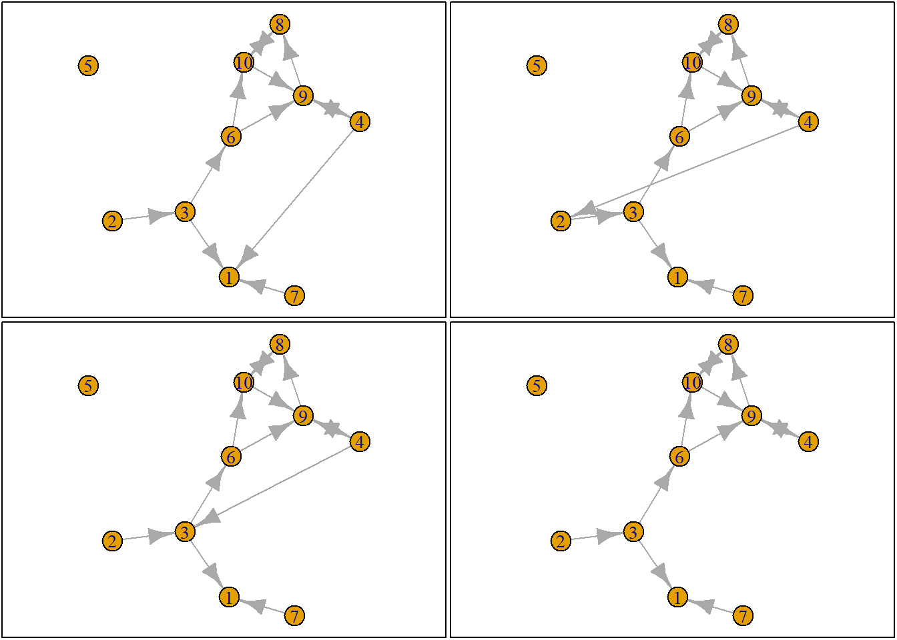
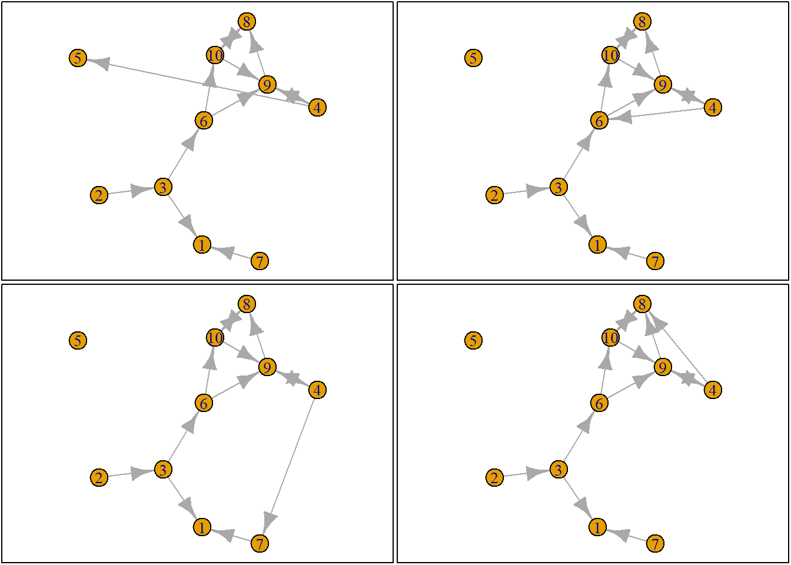
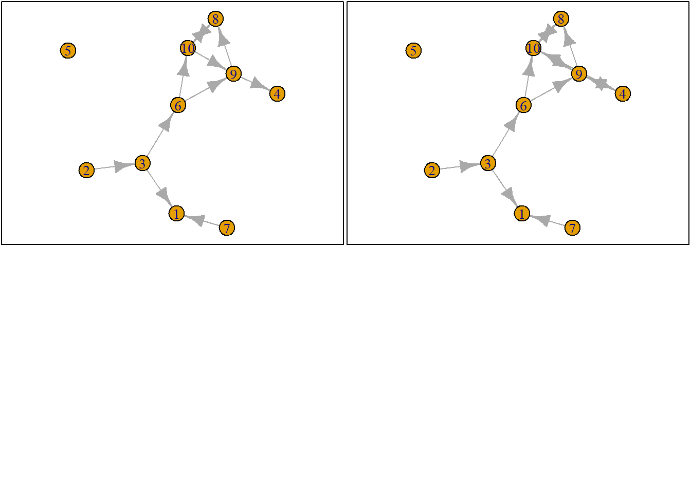

Last compiled on september, 2026
This week, we have received explanation about the workings of RSiena. Additionally, we started with an RSiena tutorial that I would like to use to experiment on the dataset I am going to use for my final analysis. At home, I reread the chapters from the RSiena Manual and the Sunbelt 2024 tutorial. Additionally, I read a paper by (Franken et al. 2023), which was very insightful for thinking about what covariates I should include in my final project. As I still have some questions for the theory I want to use and the variables, I have also prepared a small ‘presentation’ about this.
##RSiena Tutorial
fpackage.check <- function(packages) {
lapply(packages, FUN = function(x) {
if (!require(x, character.only = TRUE)) {
install.packages(x, dependencies = TRUE)
library(x, character.only = TRUE)
}
})
}
fsave <- function(x, file = NULL, location = "./data/processed/") {
ifelse(!dir.exists("data"), dir.create("data"), FALSE)
ifelse(!dir.exists("data/processed"), dir.create("data/processed"), FALSE)
if (is.null(file))
file = deparse(substitute(x))
datename <- substr(gsub("[:-]", "", Sys.time()), 1, 8)
totalname <- paste(location, datename, file, ".rda", sep = "")
save(x, file = totalname) #need to fix if file is reloaded as input name, not as x.
}
fload <- function(filename) {
load(filename)
get(ls()[ls() != "filename"])
}
fshowdf <- function(x, ...) {
knitr::kable(x, digits = 2, "html", ...) %>%
kableExtra::kable_styling(bootstrap_options = c("striped", "hover")) %>%
kableExtra::scroll_box(width = "100%", height = "300px")
}
colorize <- function(x, color) {
sprintf("<span style='color: %s;'>%s</span>", color, x)
}
packages = c("RSiena", "devtools", "igraph")
fpackage.check(packages)## Loading required package: RSiena## Warning: package 'RSiena' was built under R version 4.5.3## Loading required package: devtools## Warning: package 'devtools' was built under R version 4.5.3## Loading required package: usethis## Warning: package 'usethis' was built under R version 4.5.3## Loading required package: igraph## Warning: package 'igraph' was built under R version 4.5.3##
## Attaching package: 'igraph'## The following objects are masked from 'package:stats':
##
## decompose, spectrum## The following object is masked from 'package:base':
##
## union## [[1]]
## NULL
##
## [[2]]
## NULL
##
## [[3]]
## NULL#devtools::install_github('JochemTolsma/RsienaTwoStep', build_vignettes=TRUE)
packages = c("RsienaTwoStep")
fpackage.check(packages)## Loading required package: RsienaTwoStep## Loading required package: foreach## Warning: package 'foreach' was built under R version 4.5.2## [[1]]
## NULLThis method tries to recreate the evolution of a network.
ts_net1## [,1] [,2] [,3] [,4] [,5] [,6] [,7] [,8] [,9] [,10]
## [1,] 0 0 0 0 0 0 0 0 0 0
## [2,] 0 0 1 0 0 0 0 0 0 0
## [3,] 1 0 0 0 0 1 0 0 0 0
## [4,] 0 0 0 0 0 0 0 0 1 0
## [5,] 0 0 0 0 0 0 0 0 0 0
## [6,] 0 0 0 0 0 0 0 0 1 1
## [7,] 1 0 0 0 0 0 0 0 0 0
## [8,] 0 0 0 0 0 0 0 0 0 1
## [9,] 0 0 0 1 0 0 0 1 0 0
## [10,] 0 0 0 0 0 0 0 1 1 0net1g <- graph_from_adjacency_matrix(ts_net1, mode = "directed")
coords <- layout_(net1g, nicely()) #let us keep the layout
par(mar = c(0.1, 0.1, 0.1, 0.1))
{
plot.igraph(net1g, layout = coords)
graphics::box()
}
#based on this net we are going to sample an ego. This happens with a rate function in RSiena.
#random selecteren kan via ts_select:
set.seed(24553253)
ego <- ts_select(net = ts_net1)
ego## [1] 4#je hoeft in RSiena niet altijd een seed zetten omdat je als het goed is en je theorie klopt je wel bijna dezelfde resultaten krijgt
options <- ts_alternatives_ministep(net = ts_net1, ego = ego)
options## [[1]]
## [,1] [,2] [,3] [,4] [,5] [,6] [,7] [,8] [,9] [,10]
## [1,] 0 0 0 0 0 0 0 0 0 0
## [2,] 0 0 1 0 0 0 0 0 0 0
## [3,] 1 0 0 0 0 1 0 0 0 0
## [4,] 1 0 0 0 0 0 0 0 1 0
## [5,] 0 0 0 0 0 0 0 0 0 0
## [6,] 0 0 0 0 0 0 0 0 1 1
## [7,] 1 0 0 0 0 0 0 0 0 0
## [8,] 0 0 0 0 0 0 0 0 0 1
## [9,] 0 0 0 1 0 0 0 1 0 0
## [10,] 0 0 0 0 0 0 0 1 1 0
##
## [[2]]
## [,1] [,2] [,3] [,4] [,5] [,6] [,7] [,8] [,9] [,10]
## [1,] 0 0 0 0 0 0 0 0 0 0
## [2,] 0 0 1 0 0 0 0 0 0 0
## [3,] 1 0 0 0 0 1 0 0 0 0
## [4,] 0 1 0 0 0 0 0 0 1 0
## [5,] 0 0 0 0 0 0 0 0 0 0
## [6,] 0 0 0 0 0 0 0 0 1 1
## [7,] 1 0 0 0 0 0 0 0 0 0
## [8,] 0 0 0 0 0 0 0 0 0 1
## [9,] 0 0 0 1 0 0 0 1 0 0
## [10,] 0 0 0 0 0 0 0 1 1 0
##
## [[3]]
## [,1] [,2] [,3] [,4] [,5] [,6] [,7] [,8] [,9] [,10]
## [1,] 0 0 0 0 0 0 0 0 0 0
## [2,] 0 0 1 0 0 0 0 0 0 0
## [3,] 1 0 0 0 0 1 0 0 0 0
## [4,] 0 0 1 0 0 0 0 0 1 0
## [5,] 0 0 0 0 0 0 0 0 0 0
## [6,] 0 0 0 0 0 0 0 0 1 1
## [7,] 1 0 0 0 0 0 0 0 0 0
## [8,] 0 0 0 0 0 0 0 0 0 1
## [9,] 0 0 0 1 0 0 0 1 0 0
## [10,] 0 0 0 0 0 0 0 1 1 0
##
## [[4]]
## [,1] [,2] [,3] [,4] [,5] [,6] [,7] [,8] [,9] [,10]
## [1,] 0 0 0 0 0 0 0 0 0 0
## [2,] 0 0 1 0 0 0 0 0 0 0
## [3,] 1 0 0 0 0 1 0 0 0 0
## [4,] 0 0 0 0 0 0 0 0 1 0
## [5,] 0 0 0 0 0 0 0 0 0 0
## [6,] 0 0 0 0 0 0 0 0 1 1
## [7,] 1 0 0 0 0 0 0 0 0 0
## [8,] 0 0 0 0 0 0 0 0 0 1
## [9,] 0 0 0 1 0 0 0 1 0 0
## [10,] 0 0 0 0 0 0 0 1 1 0
##
## [[5]]
## [,1] [,2] [,3] [,4] [,5] [,6] [,7] [,8] [,9] [,10]
## [1,] 0 0 0 0 0 0 0 0 0 0
## [2,] 0 0 1 0 0 0 0 0 0 0
## [3,] 1 0 0 0 0 1 0 0 0 0
## [4,] 0 0 0 0 1 0 0 0 1 0
## [5,] 0 0 0 0 0 0 0 0 0 0
## [6,] 0 0 0 0 0 0 0 0 1 1
## [7,] 1 0 0 0 0 0 0 0 0 0
## [8,] 0 0 0 0 0 0 0 0 0 1
## [9,] 0 0 0 1 0 0 0 1 0 0
## [10,] 0 0 0 0 0 0 0 1 1 0
##
## [[6]]
## [,1] [,2] [,3] [,4] [,5] [,6] [,7] [,8] [,9] [,10]
## [1,] 0 0 0 0 0 0 0 0 0 0
## [2,] 0 0 1 0 0 0 0 0 0 0
## [3,] 1 0 0 0 0 1 0 0 0 0
## [4,] 0 0 0 0 0 1 0 0 1 0
## [5,] 0 0 0 0 0 0 0 0 0 0
## [6,] 0 0 0 0 0 0 0 0 1 1
## [7,] 1 0 0 0 0 0 0 0 0 0
## [8,] 0 0 0 0 0 0 0 0 0 1
## [9,] 0 0 0 1 0 0 0 1 0 0
## [10,] 0 0 0 0 0 0 0 1 1 0
##
## [[7]]
## [,1] [,2] [,3] [,4] [,5] [,6] [,7] [,8] [,9] [,10]
## [1,] 0 0 0 0 0 0 0 0 0 0
## [2,] 0 0 1 0 0 0 0 0 0 0
## [3,] 1 0 0 0 0 1 0 0 0 0
## [4,] 0 0 0 0 0 0 1 0 1 0
## [5,] 0 0 0 0 0 0 0 0 0 0
## [6,] 0 0 0 0 0 0 0 0 1 1
## [7,] 1 0 0 0 0 0 0 0 0 0
## [8,] 0 0 0 0 0 0 0 0 0 1
## [9,] 0 0 0 1 0 0 0 1 0 0
## [10,] 0 0 0 0 0 0 0 1 1 0
##
## [[8]]
## [,1] [,2] [,3] [,4] [,5] [,6] [,7] [,8] [,9] [,10]
## [1,] 0 0 0 0 0 0 0 0 0 0
## [2,] 0 0 1 0 0 0 0 0 0 0
## [3,] 1 0 0 0 0 1 0 0 0 0
## [4,] 0 0 0 0 0 0 0 1 1 0
## [5,] 0 0 0 0 0 0 0 0 0 0
## [6,] 0 0 0 0 0 0 0 0 1 1
## [7,] 1 0 0 0 0 0 0 0 0 0
## [8,] 0 0 0 0 0 0 0 0 0 1
## [9,] 0 0 0 1 0 0 0 1 0 0
## [10,] 0 0 0 0 0 0 0 1 1 0
##
## [[9]]
## [,1] [,2] [,3] [,4] [,5] [,6] [,7] [,8] [,9] [,10]
## [1,] 0 0 0 0 0 0 0 0 0 0
## [2,] 0 0 1 0 0 0 0 0 0 0
## [3,] 1 0 0 0 0 1 0 0 0 0
## [4,] 0 0 0 0 0 0 0 0 0 0
## [5,] 0 0 0 0 0 0 0 0 0 0
## [6,] 0 0 0 0 0 0 0 0 1 1
## [7,] 1 0 0 0 0 0 0 0 0 0
## [8,] 0 0 0 0 0 0 0 0 0 1
## [9,] 0 0 0 1 0 0 0 1 0 0
## [10,] 0 0 0 0 0 0 0 1 1 0
##
## [[10]]
## [,1] [,2] [,3] [,4] [,5] [,6] [,7] [,8] [,9] [,10]
## [1,] 0 0 0 0 0 0 0 0 0 0
## [2,] 0 0 1 0 0 0 0 0 0 0
## [3,] 1 0 0 0 0 1 0 0 0 0
## [4,] 0 0 0 0 0 0 0 0 1 1
## [5,] 0 0 0 0 0 0 0 0 0 0
## [6,] 0 0 0 0 0 0 0 0 1 1
## [7,] 1 0 0 0 0 0 0 0 0 0
## [8,] 0 0 0 0 0 0 0 0 0 1
## [9,] 0 0 0 1 0 0 0 1 0 0
## [10,] 0 0 0 0 0 0 0 1 1 0plots <- lapply(options, graph_from_adjacency_matrix, mode = "directed")
par(mar = c(0, 0, 0, 0) + 0.1)
par(mfrow = c(2, 2))
fplot <- function(x) {
plot.igraph(x, layout = coords, margin = 0)
graphics::box()
}
#met deze functie vraag je R om het allemaal tegelijk te plotten, met alle mogelijke opties vna 4
lapply(plots, fplot)

## [[1]]
## NULL
##
## [[2]]
## NULL
##
## [[3]]
## NULL
##
## [[4]]
## NULL
##
## [[5]]
## NULL
##
## [[6]]
## NULL
##
## [[7]]
## NULL
##
## [[8]]
## NULL
##
## [[9]]
## NULL
##
## [[10]]
## NULL#ik tel voor optie 4 hoe vaak komt die voor. hoeveel ties heeft die
option <- 4
ts_degree(options[[option]], ego = ego) * -1 + ts_recip(options[[option]], ego = ego) * 1.5## [1] 0.5
Let’s get to some analyses. First, the practicalities:
df <- fload("C:\\Users\\ninas\\OneDrive - Radboud Universiteit\\RSCS\\Social Networks\\labjournalSN\\data\\20230621df_complete.rda")
publications <- fload("C:\\Users\\ninas\\OneDrive - Radboud Universiteit\\RSCS\\Social Networks\\labjournalSN\\data\\20230621list_publications_jt.rda")
packages = c("stringdist", "stringi", "tidyverse")
fpackage.check(packages)## Loading required package: stringdist## Warning: package 'stringdist' was built under R version 4.5.2## Loading required package: stringi## Warning: package 'stringi' was built under R version 4.5.3## Loading required package: tidyverse## Warning: package 'tidyverse' was built under R version 4.5.3## Warning: package 'ggplot2' was built under R version 4.5.2## Warning: package 'tibble' was built under R version 4.5.2## Warning: package 'tidyr' was built under R version 4.5.3## Warning: package 'readr' was built under R version 4.5.2## Warning: package 'purrr' was built under R version 4.5.2## Warning: package 'dplyr' was built under R version 4.5.2## Warning: package 'stringr' was built under R version 4.5.2## Warning: package 'forcats' was built under R version 4.5.3## Warning: package 'lubridate' was built under R version 4.5.2## ── Attaching core tidyverse packages ──────────────────────── tidyverse 2.0.0 ──
## ✔ dplyr 1.2.0 ✔ readr 2.2.0
## ✔ forcats 1.0.1 ✔ stringr 1.6.0
## ✔ ggplot2 4.0.2 ✔ tibble 3.3.1
## ✔ lubridate 1.9.5 ✔ tidyr 1.3.2
## ✔ purrr 1.2.1## ── Conflicts ────────────────────────────────────────── tidyverse_conflicts() ──
## ✖ lubridate::%--%() masks igraph::%--%()
## ✖ purrr::accumulate() masks foreach::accumulate()
## ✖ dplyr::as_data_frame() masks tibble::as_data_frame(), igraph::as_data_frame()
## ✖ purrr::compose() masks igraph::compose()
## ✖ tidyr::crossing() masks igraph::crossing()
## ✖ tidyr::extract() masks stringdist::extract()
## ✖ dplyr::filter() masks stats::filter()
## ✖ dplyr::lag() masks stats::lag()
## ✖ purrr::simplify() masks igraph::simplify()
## ✖ purrr::when() masks foreach::when()
## ℹ Use the conflicted package (<http://conflicted.r-lib.org/>) to force all conflicts to become errors## [[1]]
## NULL
##
## [[2]]
## NULL
##
## [[3]]
## NULLfpackage.check <- function(packages) {
lapply(packages, FUN = function(x) {
if (!require(x, character.only = TRUE)) {
install.packages(x, dependencies = TRUE)
library(x, character.only = TRUE)
}
})
}
fsave <- function(x, file = NULL, location = "./data/processed/") {
ifelse(!dir.exists("data"), dir.create("data"), FALSE)
ifelse(!dir.exists("data/processed"), dir.create("data/processed"), FALSE)
if (is.null(file))
file = deparse(substitute(x))
datename <- substr(gsub("[:-]", "", Sys.time()), 1, 8)
totalname <- paste(location, datename, file, ".rda", sep = "")
save(x, file = totalname) #need to fix if file is reloaded as input name, not as x.
}
fload <- function(filename) {
load(filename)
get(ls()[ls() != "filename"])
}
fshowdf <- function(x, ...) {
knitr::kable(x, digits = 2, "html", ...) %>%
kableExtra::kable_styling(bootstrap_options = c("striped", "hover")) %>%
kableExtra::scroll_box(width = "100%", height = "300px")
}
publications <- publications %>%
bind_rows() %>%
distinct(title, .keep_all = TRUE)
f_pubnets <- function(df_scholars = df, list_publications = publications, discip = "sociology", affiliation = "RU",
waves = list(wave1 = c(2018, 2019, 2020), wave2 = c(2021, 2022, 2023))) {
publications <- list_publications %>%
bind_rows() %>%
distinct(title, .keep_all = TRUE)
df_scholars %>%
filter(affil1 == affiliation | affil2 == affiliation) %>%
filter(discipline == discip) -> df_sel
networklist <- list()
for (wave in 1:length(waves)) {
networklist[[wave]] <- matrix(0, nrow = nrow(df_sel), ncol = nrow(df_sel))
}
publicationlist <- list()
for (wave in 1:length(waves)) {
publicationlist[[wave]] <- publications %>%
filter(gs_id %in% df_sel$gs_id) %>%
filter(year %in% waves[[wave]]) %>%
select(author) %>%
lapply(str_split, pattern = ",")
}
publicationlist2 <- list()
for (wave in 1:length(waves)) {
publicationlist2[[wave]] <- publicationlist[[wave]]$author %>%
# lowercase
lapply(tolower) %>%
# Removing diacritics
lapply(stri_trans_general, id = "latin-ascii") %>%
# only last name
lapply(word, start = -1, sep = " ") %>%
# only last last name
lapply(word, start = -1, sep = "-")
}
for (wave in 1:length(waves)) {
# let us remove all publications with only one author
remove <- which(sapply(publicationlist2[[wave]], FUN = function(x) length(x) == 1) == TRUE)
publicationlist2[[wave]] <- publicationlist2[[wave]][-remove]
}
for (wave in 1:length(waves)) {
pubs <- publicationlist2[[wave]]
for (ego in 1:nrow(df_sel)) {
# which ego?
lastname_ego <- df_sel$lastname[ego]
# for all publications
for (pub in 1:length(pubs)) {
# only continue if ego is author of pub
if (lastname_ego %in% pubs[[pub]]) {
aut_pot <- which.max(pubs[[pub]] %in% lastname_ego)
# only continue if ego is first author of pub
if (aut_pot == 1) {
# check all alters/co-authors
for (alter in 1:nrow(df_sel)) {
# which alter
lastname_alter <- df_sel$lastname[alter]
if (lastname_alter %in% pubs[[pub]]) {
networklist[[wave]][ego, alter] <- networklist[[wave]][ego, alter] + 1
}
}
}
}
}
}
}
return(list(df = df_sel, network = networklist))
}
packages = c("RSiena", "tidyverse", "stringdist", "stringi")
fpackage.check(packages)## [[1]]
## NULL
##
## [[2]]
## NULL
##
## [[3]]
## NULL
##
## [[4]]
## NULLThe analysis methods exists of 6 to 7 methods. First five now always need to come back. Your input should be variables and matrices. If done, your network should be defined. Start with dependent data (should be put in separate waves):
#dependent data
output <- f_pubnets()
df_soc <- output[[1]] #sociology scholars of radboud
df_network <- output[[2]] #matrix, so a network. this is our y
length(df_network)## [1] 2wave1 <- df_network[[1]]
wave2 <- df_network[[2]]
# let us put the diagonal to zero
diag(wave1) <- 0
diag(wave2) <- 0
# we want a binary tie (not a weighted tie), because we use a 1-0 variabel
wave1[wave1 > 1] <- 1
wave2[wave2 > 1] <- 1
# put the nets in an array
net_soc_array <- array(data = c(wave1, wave2), dim = c(dim(wave1), 2))
# done. now you have to make a dependent variable:
net <- sienaDependent(net_soc_array)
#network needs at least 2 waves Now independent variables and creating the data object:
#if you are female, you get a 1, and if you are a male, you get a 0
gender <- as.numeric(df_soc$gender == "female")
gender <- coCovar(gender) #means constant covariate. Time variables also exist and dyad variables. etc.
#now, add independent and dependent together
mydata <- sienaDataCreate(net, gender)Now we are going to decide the effect objects (our statistics/variables)
myeff <- getEffects(mydata)
effectsDocumentation(myeff)## Effects documentation written to file myeff.html .#these are all the effects you can take into account for this very simple uniplex network
#all statistics we use are about evaluationWhat does our data look like?
ifelse(!dir.exists("results"), dir.create("results"), FALSE)## [1] FALSEprint01Report(mydata, modelname = "./results/soc_init")Now, we start the theoretical complexities. These are your hypotheses. This you do with include effects:
myeff <- includeEffects(myeff, isolateNet, inPop, outAct, inAct, transTrip) #we know that quite a lot of staff has not published with someone else## effectNumber effectName shortName include fix test
## 1 21 transitive triplets transTrip TRUE FALSE FALSE
## 2 78 indegree - popularity inPop TRUE FALSE FALSE
## 3 115 outdegree - activity outAct TRUE FALSE FALSE
## 4 124 indegree - activity(#) inAct TRUE FALSE FALSE
## 5 158 network-isolate isolateNet TRUE FALSE FALSE
## initialValue parm
## 1 0 0
## 2 0 0
## 3 0 0
## 4 0 1
## 5 0 0# it is recommended to make a separate line for every effect. like this:
#myeff <- includeEffects(myeff, isolateNet)
#myeff <- includeEffects(myeff, inPop)
#etc...
myeff <- includeEffects(myeff, sameX, egoX, altX, interaction1 = "gender")## effectNumber effectName shortName include fix test initialValue parm
## 1 262 gender alter altX TRUE FALSE FALSE 0 0
## 2 277 gender ego egoX TRUE FALSE FALSE 0 0
## 3 333 same gender sameX TRUE FALSE FALSE 0 0#interaction has nothing to interaction. It is X = gender. Now we are going to estimate:
myAlgorithm <- sienaAlgorithmCreate(projname = "soc_init")## If you use this algorithm object, siena07 will create/use an output file soc_init.txt .(ans <- siena07(myAlgorithm, data = mydata, effects = myeff))## Estimates, standard errors and convergence t-ratios
##
## Estimate Standard Convergence
## Error t-ratio
##
## Rate parameters:
## 0 Rate parameter 4.1220 ( 1.0565 )
##
## Other parameters:
## 1. eval outdegree (density) -2.4624 ( 0.6789 ) -0.0607
## 2. eval reciprocity 2.3508 ( 0.5602 ) -0.0013
## 3. eval transitive triplets 0.7588 ( 0.4455 ) -0.1132
## 4. eval indegree - popularity 0.2196 ( 0.0598 ) -0.0470
## 5. eval outdegree - activity 0.0194 ( 0.1001 ) -0.0740
## 6. eval indegree - activity(1) -0.4263 ( 0.3116 ) -0.0490
## 7. eval network-isolate 2.4256 ( 1.1423 ) -0.0267
## 8. eval gender alter -0.4088 ( 0.3021 ) 0.0203
## 9. eval gender ego 0.1493 ( 0.3924 ) -0.0635
## 10. eval same gender 0.1517 ( 0.2871 ) -0.0262
##
## Overall maximum convergence ratio: 0.1745
##
##
## Total of 2568 iteration steps.# (the outer parentheses lead to printing the obtained result on the screen) if necessary, estimate
# further
(ans <- siena07(myAlgorithm, data = mydata, effects = myeff, prevAns = ans, returnDeps = TRUE))## Estimates, standard errors and convergence t-ratios
##
## Estimate Standard Convergence
## Error t-ratio
##
## Rate parameters:
## 0 Rate parameter 4.0985 ( 1.0141 )
##
## Other parameters:
## 1. eval outdegree (density) -2.4870 ( 0.7863 ) -0.0219
## 2. eval reciprocity 2.3427 ( 0.5923 ) 0.0368
## 3. eval transitive triplets 0.7448 ( 0.4008 ) -0.0402
## 4. eval indegree - popularity 0.2230 ( 0.0659 ) 0.0027
## 5. eval outdegree - activity 0.0190 ( 0.0961 ) -0.0293
## 6. eval indegree - activity(1) -0.3997 ( 0.3630 ) 0.0099
## 7. eval network-isolate 2.4582 ( 1.3446 ) 0.0292
## 8. eval gender alter -0.3987 ( 0.3012 ) -0.0031
## 9. eval gender ego 0.1685 ( 0.3850 ) 0.0292
## 10. eval same gender 0.1578 ( 0.2685 ) -0.0035
##
## Overall maximum convergence ratio: 0.1557
##
##
## Total of 2676 iteration steps.ans## Estimates, standard errors and convergence t-ratios
##
## Estimate Standard Convergence
## Error t-ratio
##
## Rate parameters:
## 0 Rate parameter 4.0985 ( 1.0141 )
##
## Other parameters:
## 1. eval outdegree (density) -2.4870 ( 0.7863 ) -0.0219
## 2. eval reciprocity 2.3427 ( 0.5923 ) 0.0368
## 3. eval transitive triplets 0.7448 ( 0.4008 ) -0.0402
## 4. eval indegree - popularity 0.2230 ( 0.0659 ) 0.0027
## 5. eval outdegree - activity 0.0190 ( 0.0961 ) -0.0293
## 6. eval indegree - activity(1) -0.3997 ( 0.3630 ) 0.0099
## 7. eval network-isolate 2.4582 ( 1.3446 ) 0.0292
## 8. eval gender alter -0.3987 ( 0.3012 ) -0.0031
## 9. eval gender ego 0.1685 ( 0.3850 ) 0.0292
## 10. eval same gender 0.1578 ( 0.2685 ) -0.0035
##
## Overall maximum convergence ratio: 0.1557
##
##
## Total of 2676 iteration steps.#so on average, there are 4 ministeps taken per agent (rate parameter)
#like we saw in our print report, there is a very low density
#high reciprocity: if I collaborate with you, you want to collaborate with me
#sterk network isolate effects. veel mensen die niet met anderen gepubliceerd hebben##Klungelen I encountered the same issue as Lauren, so I also deleted the {r} marks so I could still publish the work. Sorry for the mess!
df <- load("./All-ListedData_MRCP_Wave12_Ind.RData")
network <- load("C:\\Users\\ninas\\OneDrive - Radboud Universiteit\\RSCS\\Social Networks\\labjournalSN\\data\\All-ListedData_MRCP_Wave12_Net.RData")
View(df)
View(network)Creating a dataframe with Aschwin’s data:
load()
require(tidyverse)
#replace NAs of gender 1 with the value of gender2
gender1 <- gender[[1]][,1]
gender2 <- gender[[1]][,2]
gender_test <- coalesce(gender1, gender2)
head(gender_test)
#what do I use this for genderrsiena <- coCovar(as.numeric(gender_test))
head(parentedu)
parent1 <- coalesce(parentedu[[1]][,1],parentedu[[1]][,3])
parent2 <- coalesce(parentedu[[1]][,2], parentedu[[1]][,4])
head(parent2)
df_klooien <- data.frame(gender_test, parent1, parent2)
head(df_klooien)
?coCovar
df_klooien$rsiena_gender <- coCovar(as.numeric(df_klooien$gender_test))
df_klooien$rsiena_parent1 <- coCovar(as.numeric(df_klooien$parent1))
df_klooien$rsiena_parent2 <- coCovar(as.numeric(df_klooien$parent2))
head(df_klooien)Attempts for something with a network. I am looking at the variable ‘hanging’
#inspection
hanging[[1]][[1]]
hanging[[1]][[2]]
hanging[[1]][[3]]
#confusion! I thought there were two waves, what is the third about?
hangingw1 <- na_if(hanging[[1]][[1]], 9)
hangingw2 <- na_if(hanging[[1]][[2]], 9)
#What do I do with NAs in my matrix?
#copying the tutorial for now. No clue if that is correct
diag(hangingw1) <- 0
diag(hangingw2) <- 0
hangingw1[hangingw1 > 1] <- 1
hangingw2[hangingw2 > 1] <- 1
net_klooien_array <- array(data = c(hangingw1, hangingw2), dim = c(dim(hangingw1), 2))
net <- sienaDependent(net_klooien_array)
#how do I check if this is what I want and whether it is not trash?
klooien2 <- sienaDataCreate(net, df_klooien$rsiena_gender, df_klooien$rsiena_parent1, df_klooien$rsiena_parent2)
head(klooien2)
#I get output, but is this what I want?
myeff <- getEffects(klooien2)
ifelse(!dir.exists("results"), dir.create("results"), FALSE)
print01Report(klooien2, modelname = "./results/klooien2")
#what to do with missings? and is this what the output is supposed to look like? Okay, so I got something out of it! Whether it is actually useful is a second question, but anyways… I am going to add some effects
packages = c("RSiena", "tidyverse", "stringdist", "stringi")
fpackage.check(packages)
#I want to know something about popularity, reciprocity and transitivity
myeff1 <- includeEffects(myeff, ts_recip, inPop, transTrip)
myeff1 #how to interpret this? Is this what I am supposed to get out of it?
#looking at gender, because for parental education I still have to figure out what is the best way to classify
myeff2 <- includeEffects(myeff, sameX, egoX, altX, interaction1 = "rsiena_gender")
#so this one does not work. Ask in class
myeff2
myAlgorithm <- sienaAlgorithmCreate(projname = "klooien2")
(ans <- siena07(myAlgorithm, data = klooien2, effects = myeff1, prevAns = ans, returnDeps = TRUE))
ansans is not working for me so I am going to quit my attempt for now. I might come back to it later today
::: ::::